202203011637 Инициализация и Отображение Состояния Игры
Задание начальных значений
Описав Модель игры, теперь мы можем перейти к отображению этой модели на экране. Но перед этим, как в задачке про Буратино мы должны задать игровой модели начальное значение.
- Некоторые параметры можно задать постоянными, например время отсчета игры и жизни игрока сбросится до начальных значений:
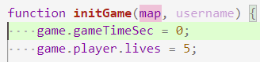
- Некоторые мы получим из аргументов в самом начале игры, например - имя игрока:
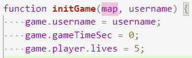
- Определенной сложностью является инициализация размеров карты. Пока мы не установили требуемую карту в HTML верстку, мы не знаем какие размеры карты будут вычислены (они задаются CSS-свойствами, относительно экрана, см Единицы измерения):
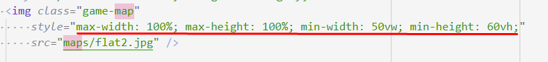
- Поэтому нам сначала нужно задать узлу карты нужное значение
src:
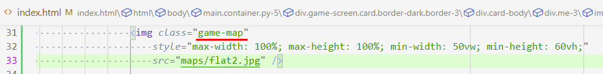
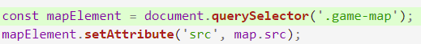
- А теперь можем взять вычисленные значения. В нашем случае правильнее всего взять
offsetWidth/Height:
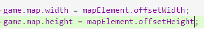
- И можем проверить, что мы точно взяли верные вычисленные значения:
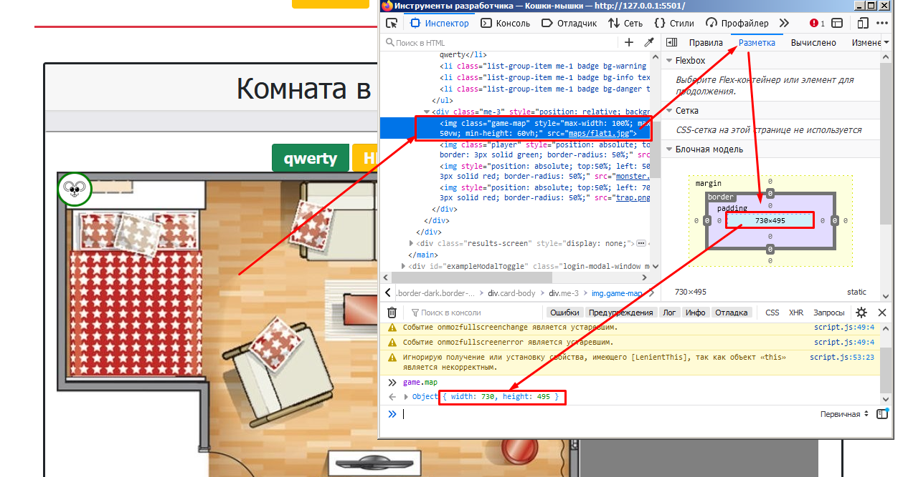
- Внимание!!! Если вы все делали верно, то вместо результата выше - размеры карты должны быть
{width: 0, height: 0}. Все дело в том, что размер картинки не будет вычислен, пока картинка не отобразиться в браузере. Поэтому, инициализацию карты стоит делать после отображения карты, а не до (как мы сделали сначала):
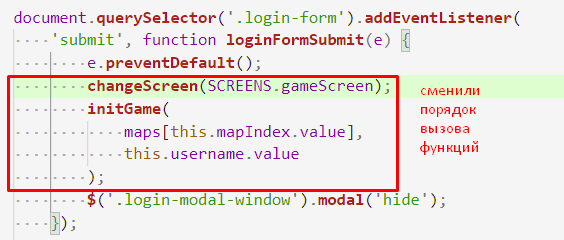
- С положением игрока не все так очевидно: в задании сказано, что цель игрока дойти до конца карты. Но вот где этот конец - не понятно. Возможно, в оригинальном задании это могло быть видно исходя из верстки и медиа-файлов. Но в нашем случае, и это не очевидно, как не очевиден факт, откуда игрок должен начинать игру. Поэтому: определим, что игрок будет начинать слева карты по середине, а заканчивать при пересечении правой границы. Определившись, мы можем задать позицию игроку используя уже полученные нами значения ширины и высоты карты:
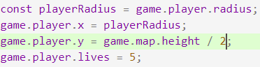
-
Обрати внимание!!! строки кода инициализации игрока был объеденины в одном месте, чтобы его было проще найти.
-
Проверить правильность координат мы пока можем только в консоли:
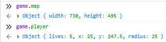
Отображение Модели Игры
Рассматривая Экран Игры и примитивный игровой цикл, рассмотренный в начале, нужно осознать и заметить один неучтенный факт: есть данные игры, которые на эркане можно зафиксировать с самого начала игры:
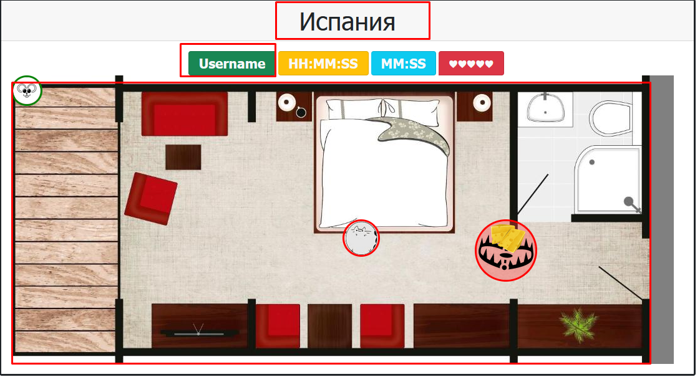
А есть те, которые будут меняться вместе с тем, как будет меняться модель игры:
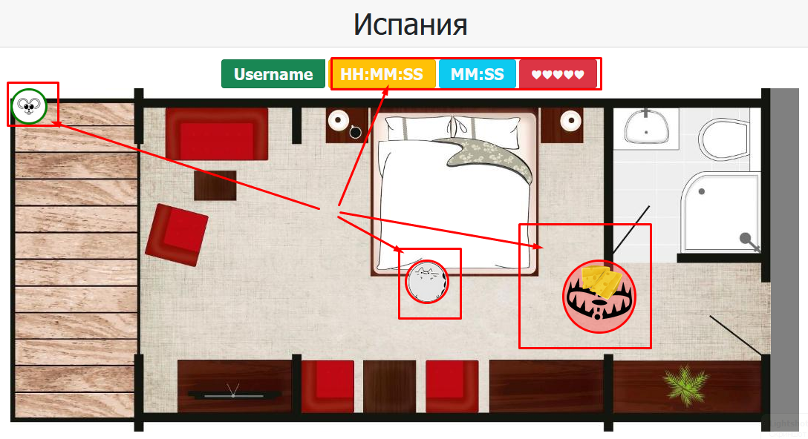
Отображение данных при инициализации
Данный код отображения игры будет выполнятся единожды, и только при инициализации игры. Поэтому, его даже не требуется выделять в отдельную функцию.
На самом деле, мы уже написали эту часть на прошлых этапах. Остается ее повторить
- Отображение названия карты и имени игрока (
initGame(map, username)):
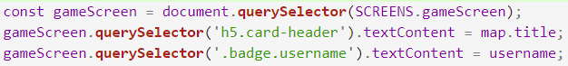
- Отображение самой карты на заднем фоне игры (
initGame(map, username)):
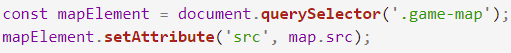
Отображение регулярно обновляемых значений
- Начнем с чего-нибудь простого: отобразим количество жизней, в зависимости от их количества в модели. Для этого найдем узел с жизнями и впишем туда столько сердец, сколько у нас в модели:
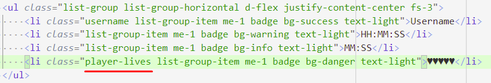
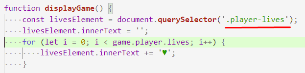
- Что бы проверить, что все работает, мы можем поменять значение жизней вручную и пере-вызвать
displayGame():
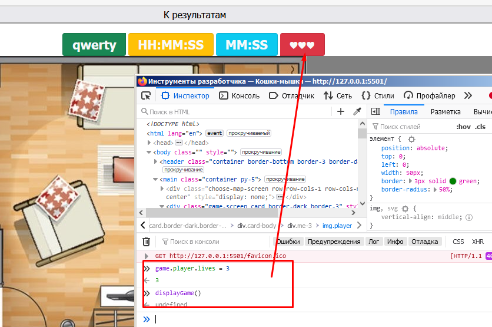
- Таким же образом, мы можем отобразить игровое время, только для начала потребуется воспользоваться операторами деления, чтобы из общего числа секунд получить минуты и секунды:
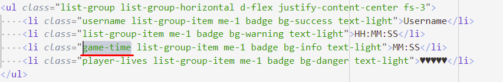
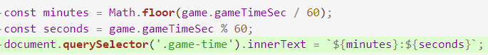
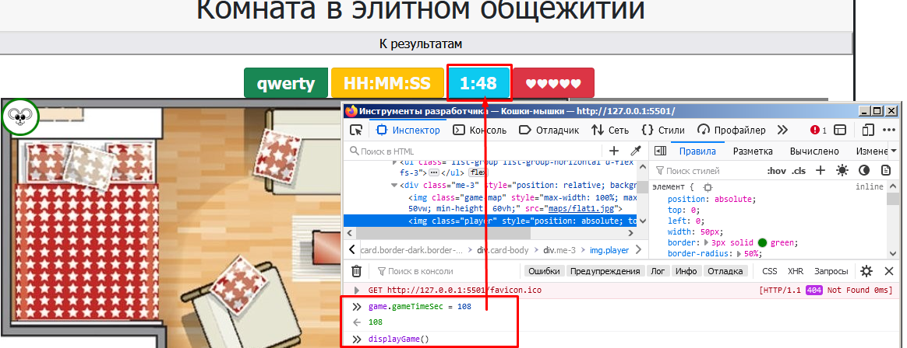
- Можно заметить, что значение не соответствует формату: ЧЧ:ММ. Для этого можно сделать вспомогательную функцию:
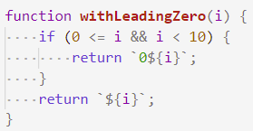
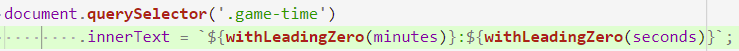
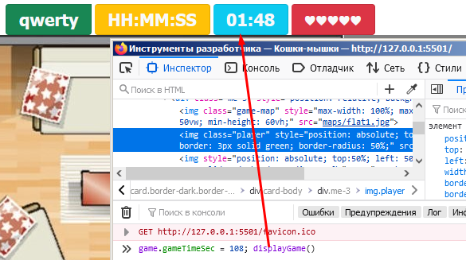
- Для получения системного времени, мы можем воспользоваться
new Date()и нашей вспомогательной функцией:
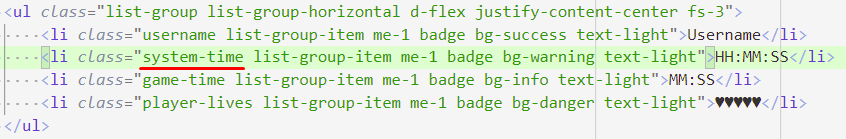
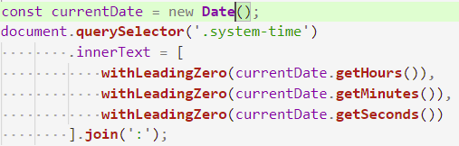
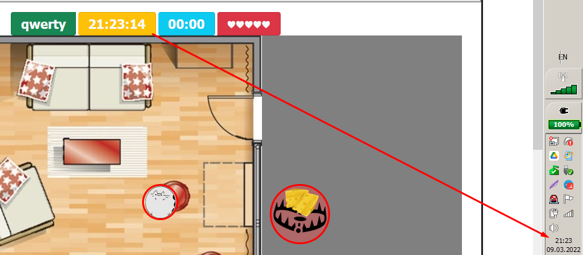
- Отображение игрока:
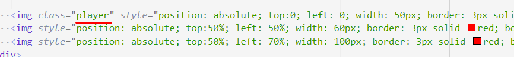
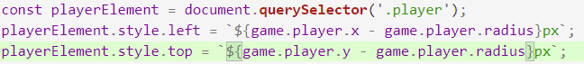
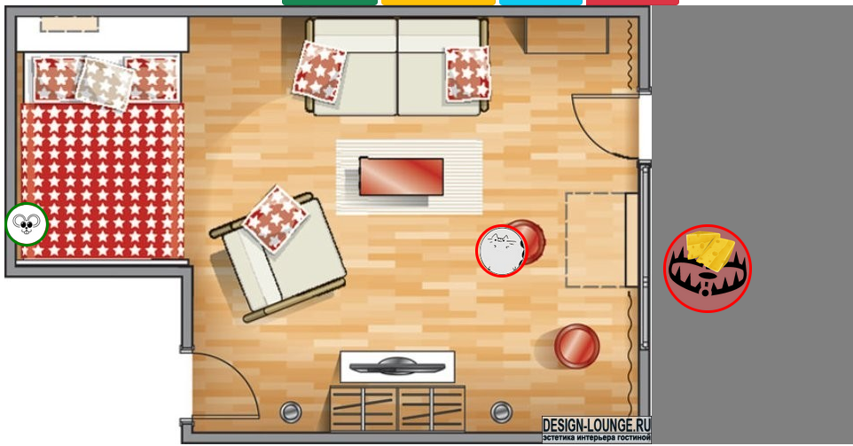
- Отображение монстров будет аналогично отображению Игрока. Но с нюансом, во-первых монстров и ловушек будет несколько, во-вторых монстры и ловушки будут появляться (случайно) и исчезать (при столкновении), поэтому и HTML узлы должны будут добавляться и удаляться в документ. Эти механизмы мы рассмотрим на следующих этапах при реализации Монстров и Ловушек.
Навигация
- WorldSkills. Модуль 2. Программирование на стороне Клиента
- Следующее: Движение Игрока
- Предыдущее: Модель/Состояние Игры